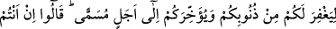
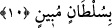

Eğer: “Onların şüphe içinde olmaları, ‘inkâr ettik’ diyerek kesin inkâr etmelerine ters
düşer.” dersen, şöyle cevap veririm: İnkâr ettikleri şey, bu peygamberlere gönderilen
kitaplar ve şerîatlardır. Şüphe ettikleri şey ise peygamberlerin onları davet ettikleri
tevhîd ve benzeri şeylerdir. İkincisinde şüphe edilmesi, birincinin kesin bir şekilde
inkâr edilmesine mâni değildir.
Şüphe, nefsin endişe duyması ve bir şey hakkında emîn olamamasıdır. Şüphe, şerrin
ve şakavetin alâmetidir. Yâni şüphe öyle bir zandır ki nefsi muzdarip eder ve gönle
karar vermez ve aklı karıştırır.
10. Peygamberleri dedi ki: “Gökleri ve yeri yaratan Allah hakkında şüphe mi
var? Halbuki O, sizin günahlarınızdan bir kısmını bağışlamak ve sizi muayyen bir
vakte kadar yaşatmak için sizi (hak dine) çağırıyor.” Onlar: “Siz de bizim gibi bir
insandan başka bir şey değilsiniz. Siz bizi atalarımızın taptıkları şeylerden
döndürmek istiyorsunuz. Öyleyse bize, apaçık bir delil getirin!” dediler.
“Peygamberleri” onların bu ahmakça sözlerinden hayrete kapılarak ve bu sözlerini
kerih görerek “dedi ki: “Gökleri ve yeri” ve bunların içinde bulunan mahlûkâtı eşsiz
bir şekilde “yaratan Allah” yâni O’nun varlığı, birliği ve sâdece O’na îmân etmenin
zorunluluğu “hakkında şüphe mi var?” O, âşikâr olan her şeyden çok daha âşikârdır. O
halde nasıl olur da O’nun hakkında derin bir şüpheye düşersiniz?! Bu soru esasen:
“Allah hakkında hiçbir şüphe yoktur.” mânâsınadır.
Biz, sizi sâdece Allah’a davet ediyoruz. Allah ise bir çok delilden ve onların açık
delâletinden anlaşıldığı üzere şüphe ihtimâli olan bir varlık değildir. Peygamberler
buna, “gökleri ve yeri yaratan” ifâdeleriyle işâret etmektedirler. Bu bakımdan gökler
ile yer bunları yaratan bir yaratıcının bulunduğuna delâlet etmektedir. Çünkü gökler ile
yerin, varlığı kesin olan bir yaratıcı olmaksızın oluşması muhaldir. Çünkü bu, teselsüle
götürür ki teselsül ise muhaldir. İşte bu yaratıcı Allah Teâlâ’dır.
Bir gün İmam-ı A‘zam mescidde otururken bir grup zındık gelerek onu helâk etmek
istedi. İmam onlara şöyle dedi:
“–Bir sorum var, ona cevap verin. Ondan sonra isterseniz zulüm kılıcına su verin.”